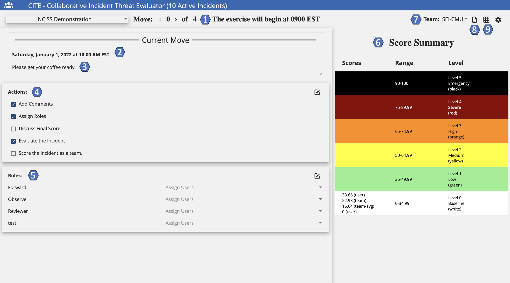
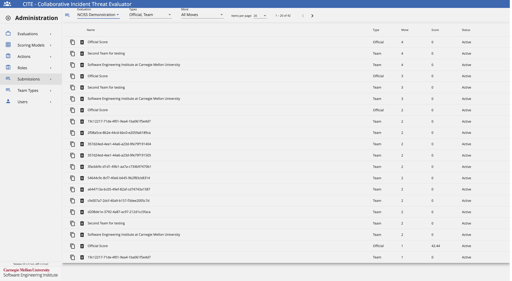
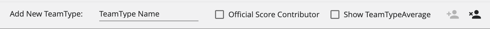

CITE: Evaluating Threats
CITE: Evaluating Threats
Overview
CITE is a web application created to integrate with the Crucible Framework and allows multiple participants from different organizations to evaluate, score, and comment on cyber incidents. CITE compares a user's score to their organization's score, group average scores, and the official exercise score. Scores are submitted for each move as the exercise progresses and each of the historical scores can be recalled for reference at any time.
In the CITE User Interface, there are two major functional sections:
- CITE Dashboard: The dashboard shows exercise details like date and time, incident summary, a suggested list of actions for participants to consider taking, and suggested participant roles.
- CITE Scoresheet: The scoresheet compares participant scores to organization scores, group average scores, and the official score.
For installation, refer to these GitHub repositories.
CITE Permissions
In order to use CITE, a user must be assigned a scoring permission.
There are three levels of permissions in CITE that affect the way a team score is collaborated on and edited.
- Basic: Can only view the team score.
- Modify: Can view and edit the team score.
- Submit: Can view, edit, and submit the team score.
Most users will have modify-level permission; however, one or two users per team will have submit-level permission, enabling them to edit and/or submit on the team score.
Additionally, participants who can submit scores on behalf of their team can also add suggested actions and participant roles to the CITE Dashboard.
Refer to the Actions to Consider section for more information.
User Guide
Moves
In CITE, a move is a defined period of time during an exercise, in which a series of events are distributed for users to discuss and assess the current incident severity.
When in Dashboard view, users have two options for interacting with moves:
- Displayed Move: Move that will be currently displayed on the screen. Here, users can see responses to previous moves and scores, but users will not be able to edit a response.
- Current Move: Move that is currently active. There are cases where the Displayed Move and the Current Move might be the same. Here, users are allowed to edit the category of the move.
CITE Landing Page
The CITE landing page provides a central approach to recompiling all evaluations that the user is a participant on into a single display.

Search for an Evaluation
To search for an evaluation, follow these steps:
- Navigate to CITE's landing page.
- Click the Search Bar and add the name of the evaluation.
CITE Dashboard
The CITE Dashboard shows exercise details like date and time, incident summary, a suggested list of actions for participants to consider taking, and suggested participant roles.
The following image shows some important hotspots about the CITE Dashboard. Reference the number on the hotspot to learn more about this section.

Active Events & Moves
Hotspot 1
The name of the active event and the move number currently displayed.
Once the user obtains Can Increment Move permission, the "Advance Move" button appears. This enables the user to advance CITE's current move, and go back and forth between moves using the arrows.

Situation Date & Time
Hotspot 2
The date and time of the situation displayed.
Situation Description
Hotspot 3
Short description of the event. This section allows for the use of HTML elements, useful when receiving MSEL information from Blueprint.
Actions to Consider
Hotspot 4
Users can see the different actions necessary to execute during the exercise. These actions are for everyone on the team and are "per move", changing at each move of the exercise.
These actions guide users on an appropriate course of action during an exercise. However, these actions are not connected to the scoresheet.
Roles
Hotspot 5
The roles give each team member a clear understanding of their responsibilities during the exercise. Roles are customizable per team, and the team members decide what role to assign to each user.
Score Summary
Hotspot 6
Displays the various scores at the appropriate severity level for the displayed move. Here, scores are always visible.
Team Selection
Hotspot 7
This feature enables a user who is part of a team, as well as an observer, to toggle back and forth between teams. When assigned an observer role, the user can see other teams' progress during the exercise, as well as participate on their own team.
CITE Report Toggle
Hotspot 8
This feature redirects users to a printable version of the CITE report that recollects all user responses throughout the exercise.
Refer to the CITE Report section for more information.
Dashboard & Scoresheet Toggle
Hotspot 9
By using this icon, users can toggle between the CITE Dashboard and the CITE Scoresheet.
CITE Scoresheet
The CITE Scoresheet compares participant scores to organization scores, group average scores, and the official score.
The following image shows some important hotspots about the CITE Scoresheet. Reference the number on the hotspot to learn more about this section.

Event Name
Hotspot 1
The name of the current event.
Displayed Move
Hotspot 2
The move currently displayed on the screen. Clicking < displays previous moves. Clicking > displays the current move. Using Displayed Move, users can see responses to previous moves and scores, but the user cannot edit a previous response.
Scoring Features
Hotspot 3
- User: This is the participant's personal score for their reference only. The user score will also appear under the Score Summary range.
- Team: Toggling the Team icon displays how the team scored this move so far. This is the score that the team collaborates on and submits for the current move. This score compares to the official score. The Team score appears under the Score Summary range.
- Team Avg: The average for all of the users on the team. The Team Avg appears under the Score Summary range for all moves except the current move.
- Group Avg: The average for all of the teams in the user's group. Group Avg appears under the Score Summary range for all moves except the current move.
- Official: The potential score; that is, how the incident should have been scored had it been a real-life scenario. Official score appears under the Score Summary range for all moves except the current move.
- Submit: Submits the score, indicating that the user scored the current move. Click Yes or No. If the user clicks Yes but changes their mind, click Reopen to edit the scoring.
- Clear: Clears any selections the user has checked but does not clear comments entered. Selecting Clear returns to a score of 0.00.
- Preset: Sets the user's selections to the previous move score to use as a starting point for the current move.
Categories and Options
Hotspot 4
Categories are individually scored based upon the current move situation. For each category, select one or more relevant options. Selecting options assigns points to each category, which compile to create the move score as defined by the scoring model.
Add, Edit, and Delete a Comment
When scoring a move, the user can attach a comment (or multiple comments) to a category.
- To add a comment, click . Enter the comment and click Save.
- To edit an existing comment, click . Make any changes, then click Save.
- To delete an existing comment, click
 . Click Yes to delete the comment.
. Click Yes to delete the comment.
When finished scoring the categories and adding comments, click Submit to submit the scores.
Score Summary
Hotspot 5
Displays the various scores at the appropriate severity level for the displayed move so the scores are always visible.
Team Selection
Hotspot 6
This feature enables a user who is part of a team, as well as an observer, to toggle back and forth between teams. When assigned an observer role, the user can see other teams' progress during the exercise, as well as participate on their own team.
CITE Report Toggle
Hotspot 7
This feature redirects users to a printable version of the CITE report that recollects all user responses throughout the exercise.
Refer to the CITE Report section for more information.
Dashboard & Scoresheet Toggle
Hotspot 8
By using this icon, users can toggle between the CITE Dashboard and the CITE Scoresheet.
CITE Report
The CITE Report recollects all user responses into a single printable page. Users can reference this for their records, and exercise administrators can obtain valuable exercise insights from it.
The following image shows the CITE Report. Here, users can view and/or print their own copy.

Administrator Guide
Evaluations
The following image shows the Evaluations Administration Page. Here, administrators can add, edit, upload, download, copy, and delete evaluations.

Add an Evaluation
Assuming that the user has been granted the appropriate permissions by the exercise administrator, follow these steps to add an Evaluation.

- Under the Evaluation Administration View, click +.
- Fill the fields as necessary following the Data Format Table specifications.
Data Format Table
| Field | Data Type | Description | Example |
|---|---|---|---|
| Evaluation Description | String | Details, characteristics and information of the evaluation | NCISS Demonstration |
| Scoring Model | Dropdown Text | Scoring model to use in the evaluation | CISA NCISS |
| Evaluation Status | Dropdown Text | Status of the evaluation after configuration | Active |
| Gallery Exhibit ID | GUID | ID of the Gallery exhibit, if using Gallery during an exercise | 81a623e3-faeb-4a56-8b4d-0d42f90b6829 |
| Current Move | Integer | Current move of the evaluation | 0 |
| Situation Date/Time | Datetime | Evaluation situation date/time | 1/23/2024, 14:22:40 |
| Situation Description | Rich Text | Additional details, characteristics and information of the evaluation | Agency has been hacked with a ransomware attack... |
To save these settings, click Save.
Edit an Evaluation
To edit an evaluation, follow these steps:
- Click the Settings Cog.
- Navigate to the Evaluations tab.
- Select the evaluation to edit and click Edit next to the evaluation.
- The system opens the same edit component used when creating a new evaluation.
- After making all necessary edits, click Save.
Delete an Evaluation
To delete an evaluation, follow these steps:
- Click the Settings Cog.
- Navigate to the Evaluations tab.
- Select the evaluation to delete and click the Trash Can next to the evaluation.
Upload an Evaluation
To upload an evaluation, follow these steps:
- Click the Settings Cog.
- Navigate to the Evaluations tab.
- Click the Up Arrow next to the +.
- Select the evaluation JSON file to upload.
Download an Evaluation
To download an evaluation, follow these steps:
- Click the Settings Cog.
- Navigate to the Evaluations tab.
- Click the Down Arrow next to the evaluation to download.
- Look for the JSON file in your Downloads folder.
Copy an Evaluation
To copy an evaluation, follow these steps:
- Click the Settings Cog.
- Navigate to the Evaluations tab.
- Click Copy next to the evaluation to copy.
- Look for the evaluation name with the user's name.
Configure an Evaluation
To configure an evaluation to use for an exercise, administrators will need to add moves and teams to the evaluation. To do this, follow these steps:

Moves

- Click + on the Moves section.
- Fill the fields as necessary following the Data Format Table specifications.
Data Format Table
| Field | Data Type | Description | Example |
|---|---|---|---|
| Move Number | Integer | Move number to add | 0 |
| Move Description | String | Details, characteristics and information of the move | The exercise will begin at 0900 EST |
| Situation Date/Time | Datetime | Situation date/time for the move | 1/23/2024, 14:30:21 |
| Situation Description | Rich Text | Additional details, characteristics and information of the move | The objectives of the exercise are... |
To save these settings, click Save.
Edit a Move
To edit a move, follow these steps:
- Click the Settings Cog.
- Navigate to the Evaluations tab.
- Select the evaluation to edit and click the Moves tab.
- Select the move to edit and click Edit next to the move.
- The system opens the same edit component used when creating a new move.
- After making all necessary edits, click Save.
Delete a Move
To delete a move, follow these steps:
- Click the Settings Cog.
- Navigate to the Evaluations tab.
- Select the evaluation to edit and click the Moves tab.
- Select the move to delete and click the Trash Can next to the move.
Teams

- Click + on the Teams section.
- Fill the fields as necessary following the Data Format Table specifications.
Data Format Table
| Field | Data Type | Description | Example |
|---|---|---|---|
| Name | String | Name for the team | Carnegie Mellon University |
| Short Name | String | Short name for the team, such as an acronym | CMU |
| Team Type | Dropdown Text | Select what type should be assigned to the team | Individual Organization |
| Hide Scoresheet | Boolean | Select whether to hide CITE Scoresheet from that specific team | False |
To save these settings, click Save.
Edit a Team
To edit a team, follow these steps:
- Click the Settings Cog.
- Navigate to the Evaluations tab.
- Select the evaluation to edit and click the Teams tab.
- Select the team to edit and click Edit next to the team.
- The system opens the same edit component used when creating a new team.
- After making all necessary edits, click Save.
Delete a Team
To delete a team, follow these steps:
- Click the Settings Cog.
- Navigate to the Evaluations tab.
- Select the evaluation to edit and click the Teams tab.
- Select the team to delete and click the Trash Can next to the team.
Observers
To assign the Observer Role to a user:
- Under Evaluation Users, search for the desired user.
- Once the user has been found, click Add.
To remove the Observer Role from a user:
- Under Observers, search for the desired user.
- Once the user has been found, click Remove.
Scoring Models
The following image shows the Scoring Models Administration Page. Here, administrators can add, edit, copy, download, upload, and delete scoring models.

Add a Scoring Model
Assuming that the user has been granted the appropriate permissions by the exercise administrator, follow these steps to add a Scoring Model.

- Under the Scoring Model Administration View, click +.
- Fill the fields as necessary following the Data Format Table specifications.
Data Format Table
| Field | Data Type | Description | Example |
|---|---|---|---|
| Scoring Model Description | String | Details, characteristics and information of the scoring model | NCISS Scoring Model |
| Scoring Model Status | Dropdown Text | Status of the scoring model after configuration | Active |
| Calculation Equation | Varchar | Equation used to evaluate participant scores | {sum} |
| Use Individual User Scoring | Boolean | If selected, the User score is displayed | False |
| Use Team Scoring | Boolean | If selected, the Team score is displayed | True |
| Use Official Scoring | Boolean | If selected, the Official score is displayed | False |
| Use Team Average Scoring | Boolean | If selected, the Team Average score is displayed | False |
| Use Type Average Scoring | Boolean | If selected, the Type Average score is displayed | False |
| Use Submit | Boolean | Setting to add Submit button to CITE Scoresheet | False |
| Hide Scores on Scoresheet | Boolean | Don't show scores on Scoresheet | True |
| Display Comments as Textboxes | Boolean | Provide a larger textbox on Scoresheet for lengthy responses | True |
| Display Scoring Categories by Move Number | Boolean | Display different sets of scoring categories per move, instead of all at once | True |
| Show Past Situation Descriptions | Boolean | Display situation descriptions from past moves in a list format | True |
| Right Side Display | Dropdown Text | Select what to display (Score Summary, Scoresheet, HTML Block, Embedded Url, None) | Scoresheet |
To save these settings, click Save.
When adding a Scoring Model, an administrator adds a defined equation to calculate the submission score from the category scores, which can contain the following variables:
- {average}: The average value of the Scoring Categories.
- {sum}: The sum of the Scoring Categories.
- {count}: The count of the Scoring Categories.
- {minPossible}: The minimum possible value of the submission.
- {maxPossible}: The maximum possible value of the submission.
Aside from these variables, > can be used to set clipping values for the equation.
- Example: 100 > equation > 20 will constrain the value of the submission between 100 and 20.
Edit a Scoring Model
To edit a scoring model, follow these steps:
- Click the Settings Cog.
- Navigate to the Scoring Models tab.
- Select the scoring model to edit and click Edit next to the scoring model.
- The system opens the same edit component used when creating a new scoring model.
- After making all necessary edits, click Save.
Upload a Scoring Model
To upload a scoring model, follow these steps:
- Click the Settings Cog.
- Navigate to the Scoring Models tab.
- Click the Up Arrow next to the +.
- Select the scoring model JSON file to upload.
Download a Scoring Model
To download a scoring model, follow these steps:
- Click the Settings Cog.
- Navigate to the Scoring Models tab.
- Click the Down Arrow next to the scoring model to download.
- Look for the JSON file in your Downloads folder.
Copy a Scoring Model
To copy a scoring model, follow these steps:
- Click the Settings Cog.
- Navigate to the Scoring Models tab.
- Click Copy next to the scoring model to copy.
- Look for the scoring model name with the user's name.
Delete a Scoring Model
To delete a scoring model, follow these steps:
- Click the Settings Cog.
- Navigate to the Scoring Models tab.
- Select the scoring model to delete and click the Trash Can next to the scoring model.
Scoring Categories
To configure a Scoring Model to use for an exercise, administrators will need to add Scoring Categories.
Within a Scoring Model, an administrator can add one or more Scoring Categories. To do this, follow these steps:

Add Scoring Category

- Click + on the Scoring Categories section.
- Fill the fields as necessary following the Data Format Table specifications.
Data Format Table
| Field | Data Type | Description | Example |
|---|---|---|---|
| Scoring Category Description | String | Details, characteristics and information of the scoring category | Information Impact |
| Display Order | Integer | Scoring category display order on CITE Scoresheet | 1 |
| First Move to Display | Integer | Move number the scoring category should be first displayed | 1 |
| Last Move to Display | Integer | Move number the scoring category should be last displayed | 1 |
| Calculation Equation | Varchar | Equation used to evaluate participant's scores | {sum} |
| Calculation Weight | Integer | Weight of the score compared to other categories | 1 |
| Scoring Option Selection Type | Dropdown Text | Determine whether the checkboxes should be shown for scoring from Single, Multiple, None options | Single |
| Modifier Selection Required | Boolean | Modifiers can be added to add an alternate value to the calculation | True |
To save these settings, click Save.
A Scoring Category may have zero or more required or optional Modifiers. If there is no optional Modifier, the Scoring Category calculation uses a default value of 1.0.
Additionally, a Scoring Category has an admin defined equation to calculate the submission score from the category scores and can contain the following variables:
- {sum}: The sum of the selected Scoring Option values.
- {count}: The count of the selected Scoring Option values.
- {min}: The minimum of the selected Scoring Option values.
- {max}: The maximum of the selected Scoring Option values.
- {modifier}: The selected modifier value, which defaults to 1.
Last but not least, a Scoring Category has a weight by which to multiply the score obtained from the entered equation.
Edit a Scoring Category
To edit a scoring category, follow these steps:
- Click the Settings Cog.
- Navigate to the Scoring Models tab.
- Select the scoring model to edit and click the Scoring Categories tab.
- Select the scoring category to edit and click Edit next to the scoring category.
- The system opens the same edit component used when creating a new scoring category.
- After making all necessary edits, click Save.
Delete a Scoring Category
To delete a scoring model, follow these steps:
- Click the Settings Cog.
- Navigate to the Scoring Models tab.
- Select the scoring model to edit and click the Scoring Categories tab.
- Select the scoring category to delete and click the Trash Can next to the scoring category.
Scoring Options
Within a Scoring Category, an administrator can add one or more Scoring Options. To do this, follow these steps:
Add Scoring Options

- Click + on the Scoring Options section.
- Fill the fields as necessary following the Data Format Table specifications.
Data Format Table
| Field | Data Type | Description | Example |
|---|---|---|---|
| Scoring Option Description | String | Details, characteristics and information of the scoring option | No Impact |
| Display Order | Integer | Scoring option display order on CITE Scoresheet | 1 |
| Value | Integer | The scoring option's value for participant score | 0 |
| Is a Modifier | Boolean | Modifiers can be added to add an alternate value to the calculation | True |
To save these settings, click Save.
Edit a Scoring Option
To edit a scoring option, follow these steps:
- Click the Settings Cog.
- Navigate to the Scoring Models tab.
- Select the scoring model to edit and click the Scoring Categories tab.
- Select the scoring category to edit and click the Scoring Options tab.
- Select the scoring option to edit and click Edit next to the scoring option.
- The system opens the same edit component used when creating a new scoring option.
- After making all necessary edits, click Save.
Delete a Scoring Option
To delete a scoring option, follow these steps:
- Click the Settings Cog.
- Navigate to the Scoring Models tab.
- Select the scoring model to edit and click the Scoring Categories tab.
- Select the scoring category to edit and click the Scoring Options tab.
- Select the scoring option to delete and click the Trash Can next to the scoring option.
Actions
The following image shows the Actions Administration Page. Here, administrators can add, edit, and delete actions.
However, users who can submit scores on behalf of their team can also add suggested actions to the CITE Dashboard. The use of actions allows team members to customize their response by tracking tasks during the exercise. These actions remain internal to the team and will not be visible to other participants.

Add an Action
Assuming that the user has been granted the appropriate permissions by the exercise administrator, follow these steps to add an Action.

- Under the Actions Administration View, click the Move dropdown and select the desired move.
- Click the Team dropdown and select the desired team.
- Click + to add an Action.
- Fill the fields as necessary following the Data Format Table specifications.
Data Format Table
| Field | Data Type | Description | Example |
|---|---|---|---|
| Action Description | String | Details, characteristics and information of the action | Time to Score |
To save these settings, click Save.
Edit an Action
To edit an action, follow these steps:
- Click the Settings Cog.
- Navigate to the Actions tab.
- Select the action to edit and click Edit next to the action.
- The system opens the same edit component used when creating a new action.
- After making all necessary edits, click Save.
Delete an Action
To delete an action, follow these steps:
- Click the Settings Cog.
- Navigate to the Action tab.
- Select the action to delete and click the Trash Can next to the action.
Roles
The following image shows the Roles Administration Page. Here, administrators can add, edit, and delete roles.
However, users who can submit scores on behalf of their team can also add participant roles to the CITE Dashboard. The use of roles allows team members to customize their response by tracking their responsibilities during an exercise. These roles remain internal to the team and will not be visible to other participants.

Add a Role
Assuming that the exercise administrator granted the user the appropriate permissions, follow these steps to add a Role:

- Under the Roles Administration View, click the Team dropdown and select the desired team.
- Click + to add a Role.
- Fill the fields as necessary following the Data Format Table specifications.
Data Format Table
| Field | Data Type | Description | Example |
|---|---|---|---|
| Role Name | String | Name of the role | Team Lead |
To save these settings, click Save.
Edit a Role
To edit a role, follow these steps:
- Click the Settings Cog.
- Navigate to the Roles tab.
- Select the role to edit and click Edit next to the role.
- The system opens the same edit component used when creating a new role.
- After making all necessary edits, click Save.
Delete a Role
To delete a role, follow these steps:
- Click the Settings Cog.
- Navigate to the Roles tab.
- Select the role to delete and click the Trash Can next to the role.
Submissions
The following image shows the Submissions Administration Page. Here, administrators can keep track of all score submissions provided by the different teams during an exercise. This allows administrators to compare their scores with the official score, as well as keep track of which teams are on a good track and which are not.
Additional functionalities include copying the entire score, as well as deleting a score submitted by a team.

Team Types
The following image shows the Team Types Administration Page. Here, administrators can create different types of teams to use during an exercise. This allows administrators to classify the different teams on the platform based on common characteristics and/or organizations.

Add a Team Type
Assuming that the exercise administrator granted the user the appropriate permissions, follow these steps to add a Team Type:

- Under the Team Type Administration View, click +.
- Fill the fields as necessary following the Data Format Table specifications.
Data Format Table
| Field | Data Type | Description | Example |
|---|---|---|---|
| TeamType Name | String | Name of the team type | Individual Organization |
| Official Score Contributor | Boolean | Select if the team should contribute to CITE's official score | True |
| Show TeamType Average | Boolean | Select if the score average should be available to the team | True |
To save these settings, click Save.
Edit a Team Type
To edit a team type, follow these steps:
- Click the Settings Cog.
- Navigate to the Team Types tab.
- Select the team type to edit and click Edit next to the team type.
- The system opens the same edit component used when creating a new team type.
- After making all necessary edits, click Save.
Delete a Team Type
To delete a team type, follow these steps:
- Click the Settings Cog.
- Navigate to the Team Types tab.
- Select the team type to delete and click the Trash Can next to the team type.
Users
The following image shows the Users Administration page. Here, administrators can add and delete users, and assign the necessary permissions to each user.
The available permissions are:
- System Admin: Permission that will grant a user all administration privileges on the CITE application.
- Content Developer: Will be provided the permission to manage other CITE admin pages except the Users Admin page and their permissions.
- Can Submit: The user is allowed to submit a score for the different moves on an exercise.
- Can Modify: The user is allowed to modify a score for previous moves on an exercise.
- Can Increment Move: The user is given the permission to increment the current move during an exercise.

Add a User
Assuming that the exercise administrator granted the user the appropriate permissions, follow these steps to add a User:

- Under the Users Administration View, click +.
- Fill the fields as necessary following the Data Format Table specifications.
Data Format Table
| Field | Data Type | Description | Example |
|---|---|---|---|
| User ID | GUID | User ID that identifies the user | 81a623e3-faeb-4a56-8b4d-0d42f90b6829 |
| User Name | string | User name that identifies the user | user-1 |
To save these settings, click Save and select the desired permissions to assign by checking the boxes next to the user.
Delete a User
To delete a user, follow these steps:
- Click the Settings Cog.
- Navigate to the Users tab.
- Select the users to delete and click the Trash Can next to the user.
Glossary
This glossary defines key terms and concepts used in the CITE application.
Actions: Series of steps to guide users on an appropriate course of action during an exercise.
Basic-Level Permission: Can only view the team score.
CITE: Web application that allows multiple participants from different organizations to evaluate, score, and comment on cyber incidents.
CITE Dashboard: Shows exercise details.
CITE Report: Recollects all user responses into a single printable page version for users to reference or keep for their records.
CITE Scoresheet: Compares participant scores to organizations scores, group average scores, and the official score.
Evaluation: Defines the scoring model used, as well as the moves and teams who will be participating in the exercise.
Modifiers: If enabled, the Scoring Category score will use this value in calculations, either to add, subtract, multiply and/or divide within the equation.
Modify-Level Permission: Can view and edit the team score.
Moves: A defined period of time during an exercise in which a series of events occur for users to discuss and assess the current incident severity.
Observer Role: Individuals who impartially and objectively monitor teams during an exercise.
Roles: Provide a set of responsibilities assigned to a user during an exercise.
Scoring Category: Has a defined equation used to calculate the submission score from the category scores. Additionally, the category has a weight by which to multiply the score obtained.
Scoring Model: Tool used to assign a comparative value, takes into account the totality of the data points, their relative weights, and the scores for each of their range values.
Scoring Options: Has a preset value for calculating the submission score for a given Scoring Category.
Submission: Act of providing a score or response for an evaluation in relation to an incident presented during the current move.
Submit-Level Permission: Can view, edit, and submit the team score.
Team Types: Types of teams available to assign to different teams with similar characteristics during an exercise.